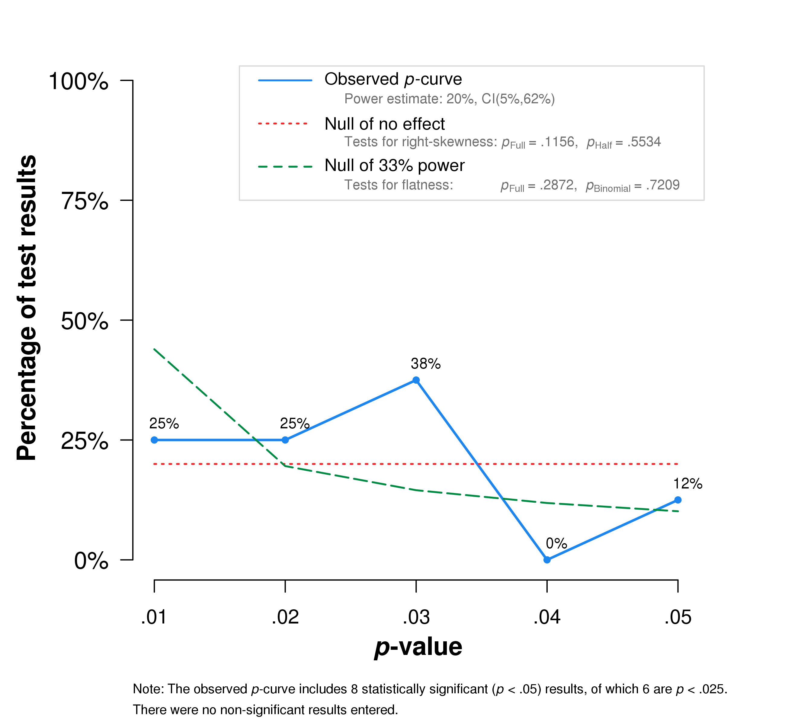
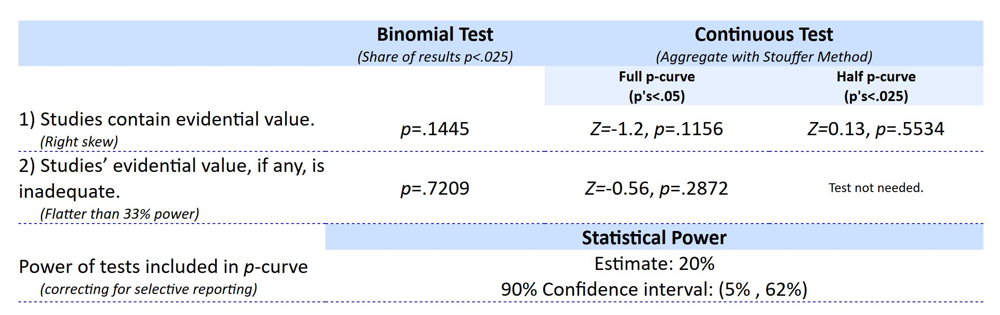

再等等，你確定這不是「雷」研究嗎？
本文印證第一手劣質科學研究，確實會被不了解如何評估品質的科普作家，當成有價值的新知。本文提出的分析與建議，適用於任何內容及情節相似的科普案例，並非針對性批判讓我得知這件案例的科普作家知識能力。
七月底準備出國開會之前，在RSS訂閱通知看到這一篇科普文章“等等，你確定這不是假新聞嗎？”，介紹美國哥倫比亞大學商學院Johar Gita率領的團隊，發表在《美國國家科學院院刊》的事實查核的心理學研究。看到介紹文章第二段之中的一句話”研究者以一系列八個實驗來告訴大家一件事”，勾起了我的好奇心，找來原始論文一讀。讀了沒多久，發現了三件事情，讓我決定寫這篇網誌呈現我的分析，提供中文科普作者與讀者另一個觀點：
1. 這篇論文的責任編輯是Susan Fisk。
2. 八個實驗的後七個是第一個實驗的概念性再現，一致的實驗方法是受試者瀏覽網頁新聞標題，察覺其他參與者的存在，便會降低進行事實查核的意願。但是多數實驗結果p值在0.05到0.01之間。
3. 肉眼掃過前三項實驗的統計數據，便發現有瑕疵的自由度。
超過一成的統計數據瑕疵
察覺第三件事情的當下，我立刻開啟statcheck網頁，將全文pdf檔上傳，分析其中可能有錯的統計數據。下載輸出結果之後，發現statcheck從60項數據挑出9項錯誤 。一篇論文有超過一成的統計錯誤有多嚴重？根據荷蘭蒂爾堡大學開發statcheck的團隊研究，1985到2013年頂尖心理學期刊出版的論文，數據出錯的比例約10%。哥大商學院用一篇論文馬上達成心理學家累積30年的成就，當然要仔細檢查真正的證據力到底有多高？為何出現這麼多錯誤的論文可以在影響係數名列前茅的《美國國家科學院院刊》發表？(註1)
整體結果缺乏證據力
還好八項實驗的主要實驗變項的統計數據並未出錯。如果有錯，這篇論文一開始就不該被接受。也許是研究者的想法有新意，基本操作與測量並未有太大問題，才會獲得責任編輯的青睞。但是八項實驗結果一致，能代表這篇論文的論點獲得充分的證據支持嗎？
為此，我把八項實驗的主要變項效果統計值與p值挑出來，進行p-Curve分析(註2)。結果顯示這八項實驗結果並沒有達到最低標準的證據力，但也沒有刻意被灌水，正如以下圖表所示：


統計檢定力是指這些實驗讓其他人完整地重做一次，結果能成功重現的機率。學過基本統計應知道統計學家Cohen建議，穩定的研究結果應具備80%的統計檢定力。20%看似有點希望，但實際上50%的實驗結果就很難重現，所以從統計學的觀點，這篇論文的結論並不能成為有價值的科學知識。
為何責任編輯會影響論文品質？
證據力如此低的論文得以發表，期刊編輯的角色絕對不可小覷。我之前介紹的披薩門事件，曾提過方法學恐怖份子 一詞得名於Susan Fisk的言論。先前在2014年，Susan Fisk也是同一本期刊備受爭議的臉書研究責任編輯。這項臉書研究的爭議除了讓臉書使用者未事先知情，就參與研究的研究倫理瑕疵，研究方法是另一個被批評的重點。這項研究收集分析約15萬5千名 臉書使用者的資料，得到的實驗結果效果量卻是超乎尋常的低(0.001)。這種研究方法和結果就像為了找到蘊藏在中央山脈裡的一克拉鑽石，把整個中央山脈剷平。
繼去年創造方法學恐怖份子 一詞，Susan Fisk今年更在《心理科學期刊》發表的文章，直接點名批判為首的兩名學者：哥倫比亞大學統計學教授Andrew Gelman、多倫多大學社會心理學家Ulrich Schimmack，批評他們訴諸情緒式批判，破壞科學討論的氣氛，妨礙她所相信的好科學發展。
Susan Fisk今年發表的這篇文章提到她所謂的好科學發展，是建立在良性競爭的社群、嚴謹的研究態度、與彼此互信的討論風氣等三項基礎之上。然而，看看Susan Fisk負責編輯的臉書與事實查核研究，顯然都與嚴謹(Rigor) 沾不上邊。被她所批評的學者所持的批判基調，其實是指出沒有穩定的研究結果，就沒有彼此互信的基礎，卻被Susan Fisk代表的一些學者視為人身攻擊的言論。這種不同陣營各說各話的狀況，在一時之間難以平息。然而，品質不良的研究仍然有冒出頭的空間，絕非科學社群與大眾之福。
給中文科普作家的建議
科學文獻經過科普作家與記者的文字轉化，讓大眾得知有用又有趣的最新知識，對研究者與大眾是雙方受益的好事。然而需要妥善設計與嚴謹統計分析的研究，像是心理學，內部已有檢討反省多數研究是劣質操作結果的聲浪。在劣質科學研究尚待清理之際，筆者提出兩道給中文科普作家提昇專業的建議。
提昇科普作家的統計警覺 ：本文示範的statcheck與p-Curve分析，都是有電腦操作經驗者皆可操作的工具。但是要了解使用時機與解讀方法，就需要掌握一定程度的統計知識，我建議有心長期經營的科普作家，要不斷充實統計知識，提昇自已的察覺能力。國內各大學有開設科普課程的系所，更應鼓勵甚至要求學生，要有持續自學統計知識的能力(註3)。
不久前有72位社會科學領域的資深學者，共同掛名即將發表在自然期刊的論文，向相關領域同行倡議，此後將統計檢定的顯著水準設為0.005 ，其中一個目的就是防止像哥大商學院的這種研究，有冒出頭的機會。選擇經同行評審的註冊研究，作為報導素材 ：我強調有同行評審 的註冊研究，才是有起碼品質的科學研究。因為沒有同行評審就執行的註冊研究，還是有可能被不嚴謹的研究者利用，並被標準寬鬆的期刊編輯接受。實際案例如幾個月前台灣學者發表在演化心理學期刊的研究，研究內容涉及兩性對女性身體的性衝動差異，雖有自主再現的註冊實驗，但是未經同行評審，研究成果招致國內外一致的負評。
有同行評審的註冊研究很好辦識，在論文doi指向的網頁，有看到下面這個圖示便是：

註1 :除了自行上傳pdf檔到statcheck網頁，讀者可點此下載分析結果。
註2 :p-curve的解讀請見我之前的文章。讀者可點此連結，看到我輸入p-Curve的數據，並能按鈕到p-Curve.com，見到和本文呈現一模一樣的圖表。
註3 :個人推薦的自學課程是Coursera的Improving your statistical inferences。我與課程講師Daniel Lakens約定的影片字幕中譯已完成95%。全部完成時，我會撰寫專文介紹這門課程。